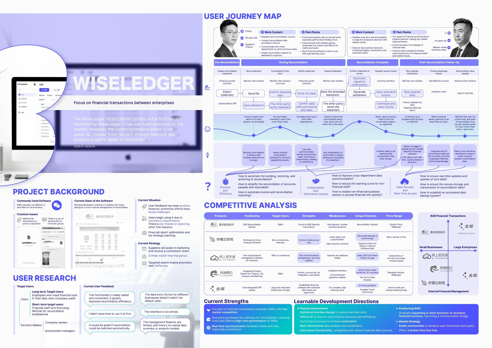
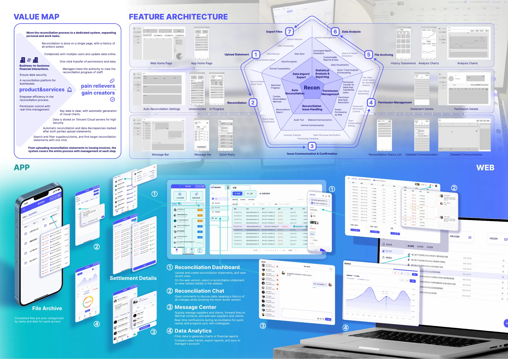
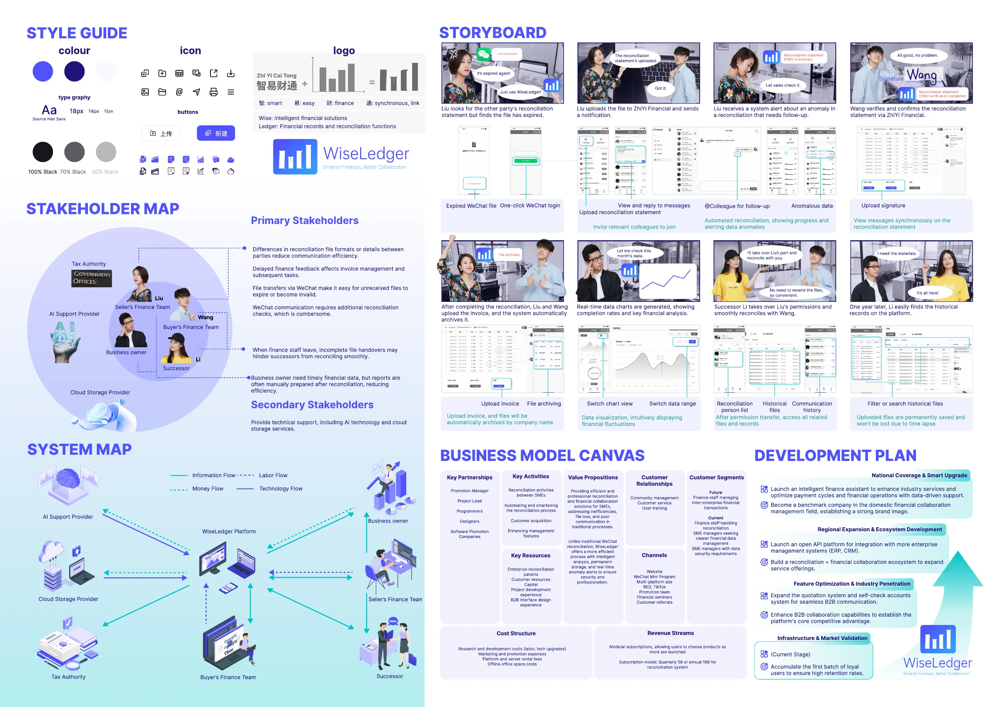

SERVICE DESIGN · PORTFOLIO
WISELEDGER
A service redesign focused on financial transactions between enterprises, improving reconciliation efficiency, collaboration and information access.



SERVICE DESIGN · PORTFOLIO
A service redesign focused on financial transactions between enterprises, improving reconciliation efficiency, collaboration and information access.


